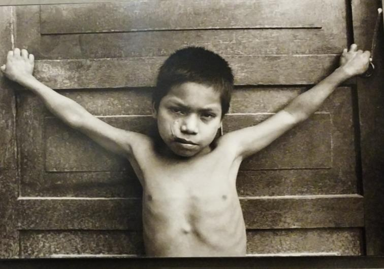
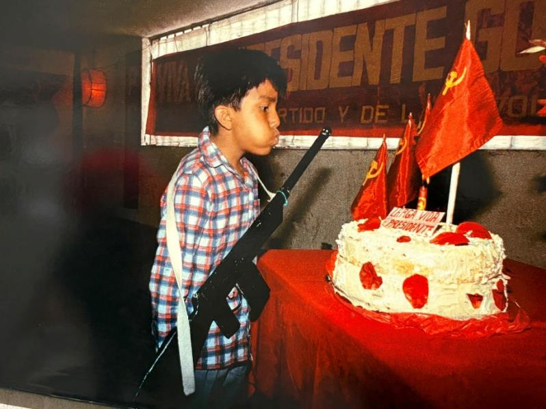
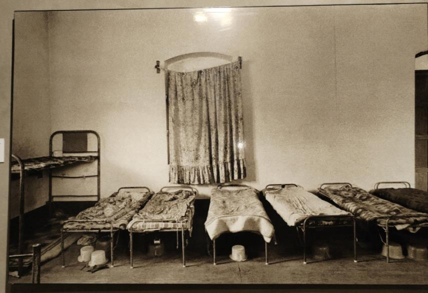
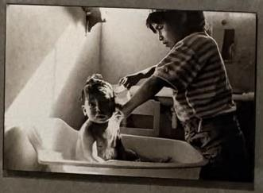
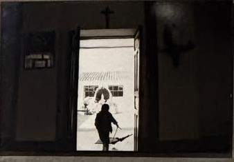
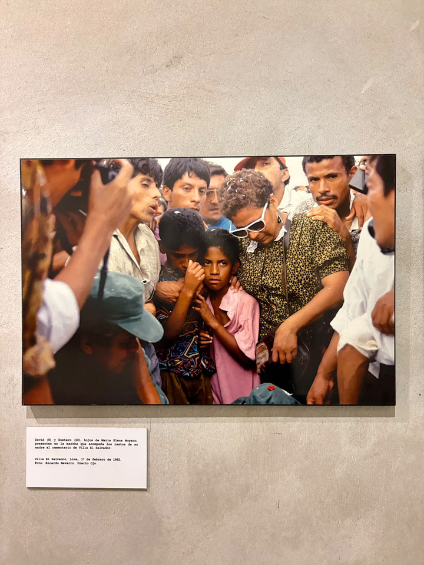
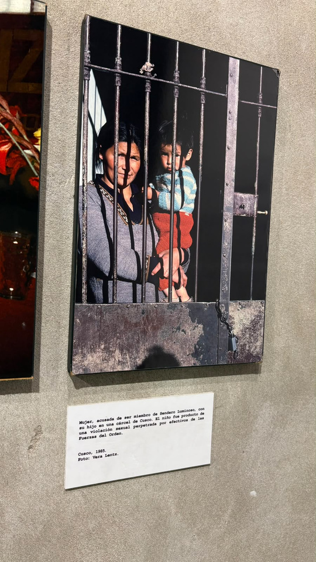
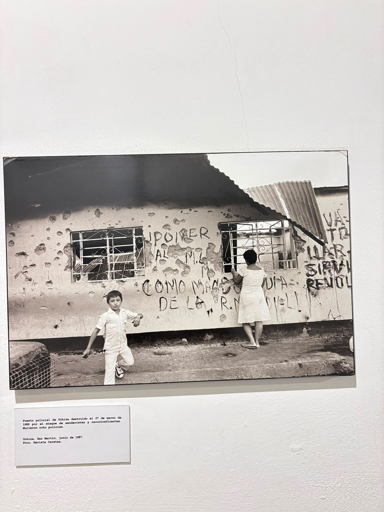

Lucio
El retrato de Lucio es impactante porque visibiliza el maltrato sufrido por el menor. Es un plano busto ligeramente picado en blanco y negro, que enfatiza sus expresiones, inocencia y vulnerabilidad.
Redacción 02
Análisis visual sobre la infancia, el conflicto armado interno y la memoria en Yuyanapaq.
Descargar documento originalTema 2
El terrorismo sacudió el Perú por casi 20 años. Desde 1980 hasta los 2000, movimientos subversivos sembraron terror en el suelo peruano. Yuyanapaq es una exposición que, a través de la fotografía, busca salvaguardar en la memoria lo acontecido en aquella época, fomentando la reflexión y generando conciencia.
Esta exposición retrata la violencia a la que fue sometido el país por Sendero Luminoso y el Movimiento Revolucionario Túpac Amaru. De todas las historias que se resguardan en este museo, la sala 20 cuenta la de los niños y niñas que vivieron esta época en carne propia.
Según la Comisión de la Verdad y Reconciliación, el reclutamiento forzado, el secuestro y la violación sexual fueron actos perpetrados por grupos subversivos hacia menores de edad.
A comparación del MRTA, Sendero Luminoso utilizó como estrategia sistemática el reclutamiento forzado y secuestro de menores. Estos casos se concentraron en mayor proporción en Ayacucho, Huancavelica, Huánuco y Junín.
Para Sendero Luminoso, los niños y niñas representaban el futuro del partido. Muchos eran separados de sus familias mediante engaños o amenazas y llevados a “escuelas populares”, donde eran adoctrinados e incorporados a la llamada revolución.

El terrorismo provocó un daño emocional irreparable en cientos de niños y niñas. Muchos quedaron huérfanos luego de ataques en sus comunidades o tras el asesinato de sus familiares por impedir su reclutamiento.
El retrato ausente muestra parte de la vida y hogar de niños y niñas rescatados. El blanco y negro y el ritmo de la composición hacen notar el trabajo detrás de la toma, mostrando atemporalidad y dramatismo.

Análisis de imágenes

El retrato de Lucio es impactante porque visibiliza el maltrato sufrido por el menor. Es un plano busto ligeramente picado en blanco y negro, que enfatiza sus expresiones, inocencia y vulnerabilidad.

Una niña siendo bañada por otra niña representa la vida de algunos menores luego del terrorismo: la soledad se volvió habitual y muchos tuvieron que cuidar a hermanos pequeños.

La imagen muestra la silueta de un menor con un arma falsa. Es una escena que revela la inocencia de los menores de edad en medio del conflicto armado interno.
Los años pueden pasar, pero para aquellos niños y niñas el recuerdo de lo vivido es imborrable. Sus testimonios quedan como parte de una historia que no debe repetirse. A través de la fotografía se logra empatizar y observar lo ocurrido desde una perspectiva cruda y humana.
Texto complementario
Entre 1980 y el año 2000, el Perú vivió uno de los periodos más dolorosos de su historia debido al conflicto armado interno. La violencia generada principalmente por grupos terroristas como Sendero Luminoso y el MRTA dejó miles de víctimas y profundas heridas en la sociedad. La muestra fotográfica Yuyanapaq. Para recordar nació con el propósito de conservar la memoria de aquellos años y visibilizar las historias de quienes sufrieron las consecuencias de la violencia.
Entre las imágenes más impactantes se encuentran aquellas que retratan a los niños, uno de los grupos más vulnerables durante esta etapa. Muchos menores crecieron en medio del miedo, presenciando atentados, enfrentamientos y desplazamientos forzados. Miles de familias tuvieron que abandonar sus hogares para escapar de la violencia, dejando atrás sus comunidades, pertenencias y formas de vida. Como consecuencia, numerosos niños vieron interrumpida su educación y enfrentaron dificultades para adaptarse a nuevos entornos.
Además de las pérdidas materiales, el terrorismo dejó secuelas emocionales profundas. El temor constante, la separación de sus familiares e incluso la muerte de padres y seres queridos marcaron la infancia de toda una generación. Algunos niños quedaron huérfanos, mientras que otros crecieron en contextos de pobreza y exclusión agravados por el conflicto.
Las fotografías de Yuyanapaq permiten comprender que detrás de las cifras existieron historias reales. Los rostros de los niños retratados reflejan tristeza, incertidumbre y resiliencia. A pesar de las adversidades, muchos lograron reconstruir sus vidas y convertirse en símbolo de fortaleza para el país.
Recordar este periodo no significa revivir el dolor, sino aprender de él. Yuyanapaq invita a las nuevas generaciones a reflexionar sobre la importancia de la paz, el respeto a los derechos humanos y la construcción de una sociedad donde hechos similares no vuelvan a repetirse.
Explicación de las fotografías
Villa El Salvador, 17 de febrero de 1992. Esta imagen muestra a David y Gustavo, hijos de María Elena Moyano, acompañando los restos de su madre. La fotografía refleja el profundo dolor que vivieron muchos niños durante la época del terrorismo.
La pérdida de familiares cercanos dejó secuelas emocionales que marcaron su infancia. El miedo, la tristeza y la incertidumbre que se observan en sus rostros representan la realidad de miles de menores afectados por la violencia.

La imagen simboliza la vulnerabilidad y el temor que muchas familias experimentaron durante el conflicto armado interno. Los niños crecieron en un ambiente donde la inseguridad era parte de la vida cotidiana.
La presencia de las rejas transmite una sensación de encierro y protección frente a un contexto de violencia, reflejando cómo el conflicto afectó incluso los espacios familiares.

Uchiza, San Martín, junio de 1987. La fotografía muestra un puesto policial destruido tras un ataque de senderistas y narcotraficantes. La presencia de niños en un entorno marcado por la destrucción evidencia cómo la violencia formó parte de su realidad diaria.
Crecer rodeados de edificios dañados, amenazas y enfrentamientos afectó su desarrollo emocional y contribuyó a que muchos menores normalizaran situaciones de violencia que nunca debieron formar parte de su infancia.
